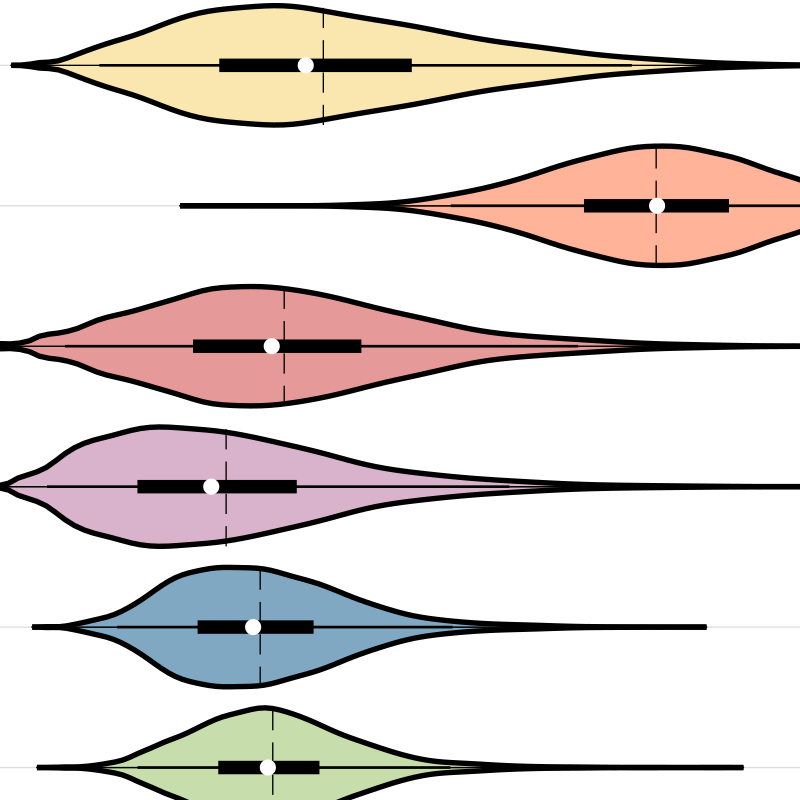

So your Stan model finished running. Now what? I wrote the matstanlib library to facilitate the postprocessing and visualization of MCMC samples in MATLAB. Plot posterior distributions, visualize individual differences, get parameter estimates, diagnose divergences, test hyperpriors, and more.
matstanlib is heavily documented and the repository actively maintained.
The RLWM model of Collins & Frank (2012) is designed to disentangle the relative contributions of reinforcement learning (RL) and working memory (WM) to performance on learning tasks of varying scale. In bayesRLWM, I have implemented the RLWM model in a Bayesian framework for the first time. A guide to the Bayesian version, including thorough testing results are summarized in a white paper are included in the repository.
bayesRLWM is heavily documented and actively maintained.